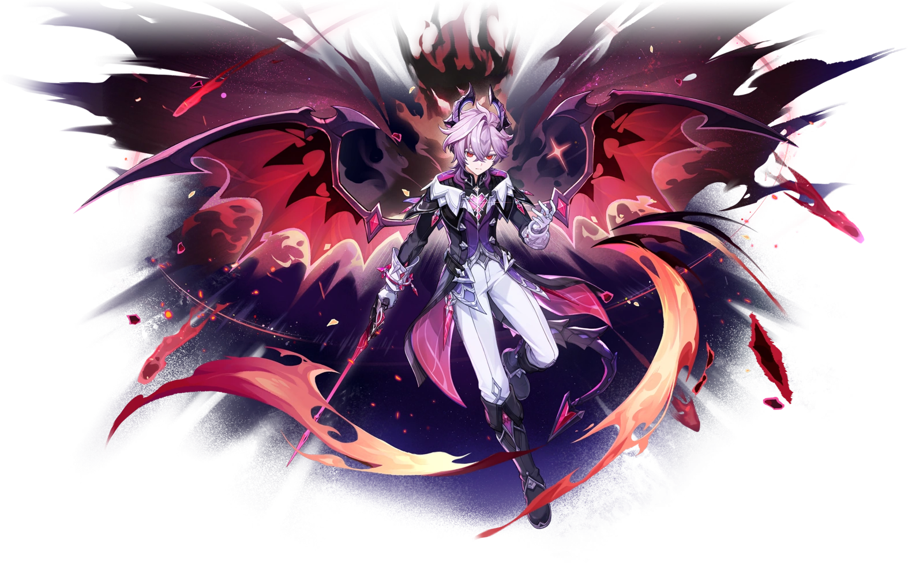

Дракон, родившийся из-под пера ведьмы М., в конце концов пришёл в мир людей. И его история продолжается.

Дурин — дракон, родившийся из-под пера ведьмы М. и в конце концов пришедший в мир людей. Он связан с Ведьминым шабашом.
Его титул — «Неугасимое пламя», созвездие — Алый Дракон.